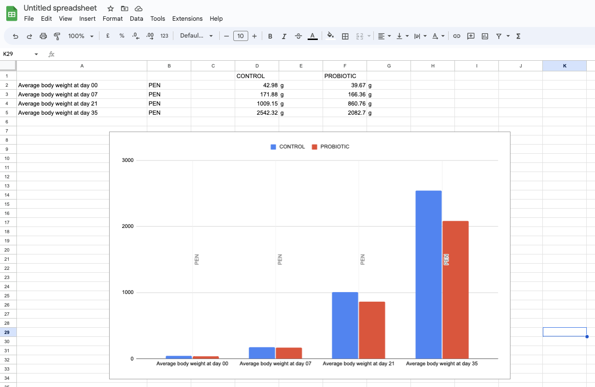
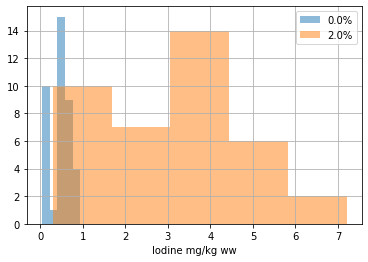

samples_endpoint_base = 'https://www.holofooddata.org/api/samples'
animals_endpoint_base = 'https://www.holofooddata.org/api/animals'
import requests
import pandas as pd
import matplotlib.pyplot as pltTutorial
A guide to using the HoloFood Data Portal
This tutorial showcases the core uses of the Data Portal. There is a solution to each learning objective.
Objective 1: Finding samples using the website
Open the HoloFood Data Portal.
Find all Salmon Fatty Acids samples from fish that were treated with Fermented Algae.
Solution
- Click
Salmon samplesin the navigation bar. - Type
fermented algaeinto theTreatment Searchfilter next to the table, selectfatty_acidsin theSample typefilter, and pressApply.
Objective 2: Find animal metadata for a specific sample
- Find the Chicken sample
SAMEA7025251. - From the sample’s host-animal metadata, find the average daily feed intake of chicken’s in that pen in the first trial week.
Solution
- Search for
SAMEA7025251in the main search box at the top of every page. - From the sample’s detail page, follow the link to the sample’s host animal
SAMEA112905290 - Open the
Animal metadatasection of the animal detail page. - Switch to the
Pentab of metadata. - Find the
Average Daily Feed intake: Day 00 - 07row (measurement = 18.59g).
Objective 3: Find functional information for a sample in MGnify
- Find chicken sample
SAMEA7817177on the data portal - Follow the links to the sample’s metagenomics analyses on MGnify
- What is
SAMEA7817177’s top Pfam entry (from MGnify’s functional analysis of it)?
Solution
- Type
SAMEA7817177into theSearch data and docssearch bar at the top of the data portal - The sample detail page for
SAMEA7817177will open directly - Open the
Metagenomicssection of the sample detail page. - Click the assembly analysis in the table
- On MGnify, switch to the
Functional analysistab. - Find the
Pfamsubtab - Find the first row of the table (the biggest bar in the bar chart)
- It is
Reverse transcriptasePF07727
Objective 4: Find MAG metadata from MGnify
- Find the
HoloFood Chicken Gut v1genomeMGYG000308389 - Using the genome’s species representative, find the genome’s most prevalent COG category with a known function.
Solution
- Click
Genomesin the navigation bar. - Select the
HoloFood Chicken Gut v1catalogue in the sub navigation - Type
MGYG000308389in theAccession containsfilter.- You could also jump straight to here by entering the accession in the global search box
- Click
View on MGnifyin the single row of the table. - On the MGnify page that opens, switch to the
COG analysissub-tab. - Look at the bar chart. Ignoring cataegory
S (Function unknown), categoryK (Transcription)is the most prevalent COG category in this genome.
Objective 6: Compare metadata between samples, using TSV files in a Spreadsheet
- Find chicken animal
SAMEA112905066on the data portal, and download the sample’s metadata TSV file - Do the same for animal
SAMEA112904813 - Notice that these samples are chickens in different pens, fed different diets (
Control, andProbioticrespectively) - Pick a spreadsheet application like Google Sheets, Excel, or LibreOffice Calc, (or write some code)
- Make a plot comparing the average weight gain of chickens in each of the two pens over time
Solution
- Open the
Chicken samplesnavigation item - Type
SAMEA14099422into theAccession containsfilter and pressApply - Click
Viewin the only row in the table - Scroll down and open the
Sample metadatasection - Press
Download all as TSV - Rename the downloaded file (
metadata.tsv) to something useful likecontrol.tsv - Repeat the previous steps for
SAMEA7025235, getting to a file called e.g.probiotic.tsv - Open/import both files in your spreadsheet application
- Find the rows labelled
Average body weight at day 00.....35 - Copy and paste the rows from each sheet next to each other
- In Google Sheets, press
Insert > Chart(or similar in other applications)

Objective 7: Use Python to analyse data from the API
Coding required
This objective takes a lot longer than the others – it involves coding and the API.
Packages required
pip install requests pandas matplotlib- Use the API to fetch a list of HoloFood salmon samples as a Pandas dataframe (the API docs will be very helpful)
- Only fetch salmon samples which were taken for Iodine measurements
- Only fetch salmon samples from tanks SD02 and SD04, which are tanks with treatment of 0.0% and 2.0% concentration seaweed treatment
- Only fetch samples which have a non-empty value for metadata variable
Iodine(that’s the measurement of iodine in the fish feces)
- Use the API to fetch sample and animal metadata for each sample and add it to the Pandas dataframe
- Make a histogram of the iodine measurements, grouped by the treatment concentration
Here’s a startpoint for the libraries and base API endpoint you need:
A complete solution is below.
Code
samples_df = None
# Fetch samples
for tank in ['SD02', 'SD04']:
page = 1
while page:
print(f'Fetching {page = } of {tank = }')
samples_page = requests.get(
f'{samples_endpoint_base}?{page=}&system=salmon&sample_type=iodine&require_metadata_value=Iodine&title={tank}'
).json()
samples_page_df = pd.json_normalize(
samples_page['items']
)
if samples_df is None:
samples_df = samples_page_df
else:
samples_df = pd.concat(
[
samples_df,
samples_page_df
]
)
page += 1
if len(samples_df) >= samples_page['count']:
page = False
def get_iodine_and_sample_time(sample):
"""Fetch metadata for the sample and its host animal."""
sample_detail = requests.get(
f'{samples_endpoint_base}/{sample.accession}'
).json()
metadata = sample_detail['structured_metadata']
iodine = next(
metadatum
for metadatum in metadata
if metadatum['marker']['name'] == 'Iodine'
)
animal_detail = requests.get(
f'{animals_endpoint_base}/{sample.animal}'
).json()
metadata = animal_detail['structured_metadata']
timepoint = next(
metadatum
for metadatum in metadata
if metadatum['marker']['name'] == 'Sampling time'
)
treatment_concentration = next(
metadatum
for metadatum in metadata
if metadatum['marker']['name'] == 'Treatment concentration'
)
iodine_measurement = iodine['measurement']
iodine_clean = iodine_measurement.replace(',', '.')
try:
iodine_float = float(iodine_clean)
except ValueError:
iodine_float = pd.NA
return iodine_float, timepoint['measurement'], treatment_concentration['measurement']
# Consolidate the metadata with the samples
metadata = samples_df.apply(
get_iodine_and_sample_time,
axis='columns',
result_type='expand'
).rename(
columns={
0: 'iodine_mg_kg_ww',
1: 'sampling_timepoint',
2: 'treatment_concentration'
}
)
trial_samples = pd.concat(
[
samples_df,
metadata
],
axis=1
)
# Drop the Day 0 samples
not_pretrial_control = trial_samples[trial_samples.sampling_timepoint != 'Day 0']
# Plot iodine measurements
not_pretrial_control.groupby('treatment_concentration').iodine_mg_kg_ww.hist(legend=True, bins=5, alpha=0.5)
plt.xlabel('Iodine mg/kg ww');Fetching page = 1 of tank = 'SD02'
Fetching page = 1 of tank = 'SD04'